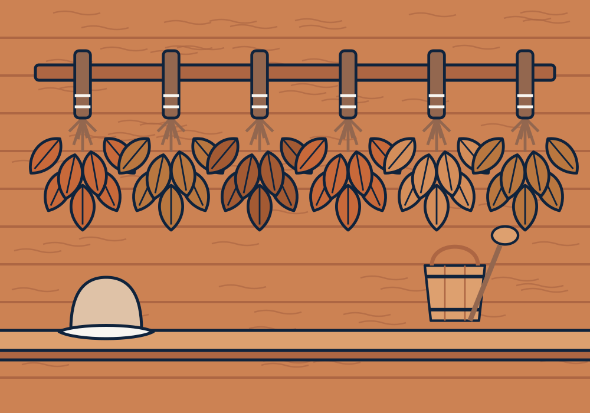

How to use a venik

The venik is the soul of the Russian banya. Used well, it moves hot air over the body, releases the scent of the leaves and leaves your skin tingling. Used badly, it is just a wet bunch of twigs. Here is how to get it right.
Choosing your venik
Birch is the classic: soft, flexible and fragrant, good for beginners. Oak has broad, tough leaves that hold more heat and last longer, so it suits stronger steaming. Eucalyptus has a strong, clear scent that many people love for breathing in the steam.
Preparing it
- Rinse the dried venik under cool water to remove dust.
- Soak it in cool water for 10 to 20 minutes so the leaves soften and the stems become flexible.
- Move it to a bucket of hot (not boiling) water for a few minutes. Cover the bucket to keep the aroma in.
- Keep the soaking water. Pouring a little onto the stones releases a beautiful scent.
Steaming, step by step
- Warm up first. Spend one round in the heat without the venik so your body is ready.
- Lie face down on the bench, feet slightly raised if you can.
- Fan the heat. Your partner lifts the venik into the hot air near the ceiling, then brings it down and holds it just above your body without touching. Move from feet to shoulders and back.
- Light patting. Gentle taps along the legs, back and arms. Think of it as massage, not punishment.
- Pressing. Lift the venik to collect heat, then press it onto the lower back, shoulders or soles for a few seconds.
- Turn over and repeat more gently on the front, avoiding the face and chest.
- Cool down with a plunge or cold shower, then rest.
Always wear a felt hat when steaming with a venik. The hottest air is at head height, and wool keeps your head comfortable for longer.
Looking after it
A well-treated venik can last two or three sessions. After use, shake it out, let it dry in an airy spot out of direct sun, and soak it again next time. When it starts dropping lots of leaves, it’s time for a new one.